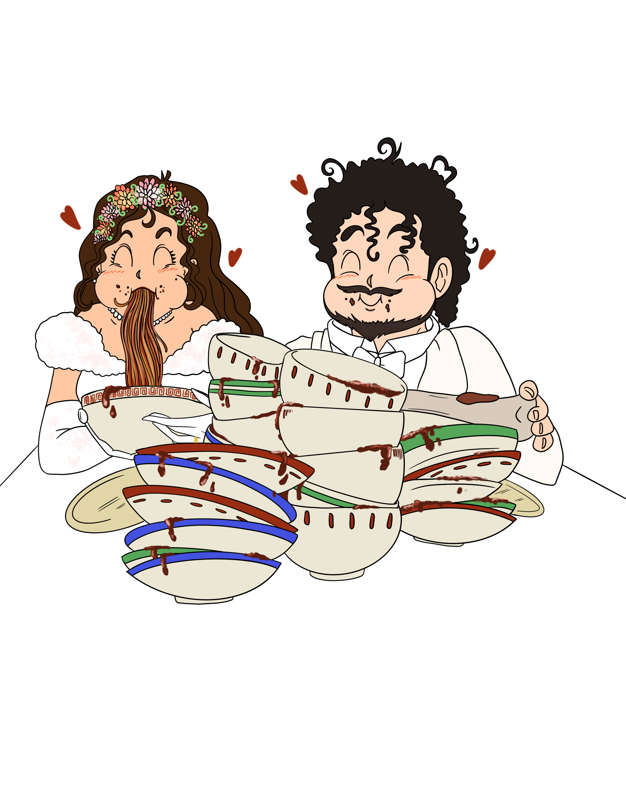

Selezione di succhi Bio e bevande analcoliche
Angolo panzerotti baresi fritti al momento
Panzerotti farciti e preparati come da tradizione barese
Zeppolina di baccalà
Con salsa di peperone dolce
Caciocavallo podolico piastrato
Su crostino di pane di Altamura
Focaccia pugliese
Servito a tavola
Carpacci di mare
Salmone, tonno rosso, pesce spada
Frittura di calamari e gamberi
Angolo del casaro
Selezione di formaggi tipici del territorio
Selezione di pane e taralli
Girello di vitellino
Con spuma di cipolla rossa caramellata, capocollo di Martina Franca, ricottina con riduzione di vincotto, bombetta di cisternino
Antipasto — Frutti di mare
Ricciolo di calamaro scottato, coda di gambero, gambero pochè con cannolo croccante di gambero e mela verde
Primo — Risotto mantecato
Con datterino giallo, pescatrice, vongole e aglio nero
Primo — Lingotto in farcia di brasciola molfettese
Il suo ristretto, fonduta al pecorino e olio verde
Secondo — Ombrina scottata
Con foglia di pane d'Altamura, julienne di seppia, sedano e olive, brodetto di pesce
Buffet di frutta e dolci
Gelato mantecato con frutta di stagione